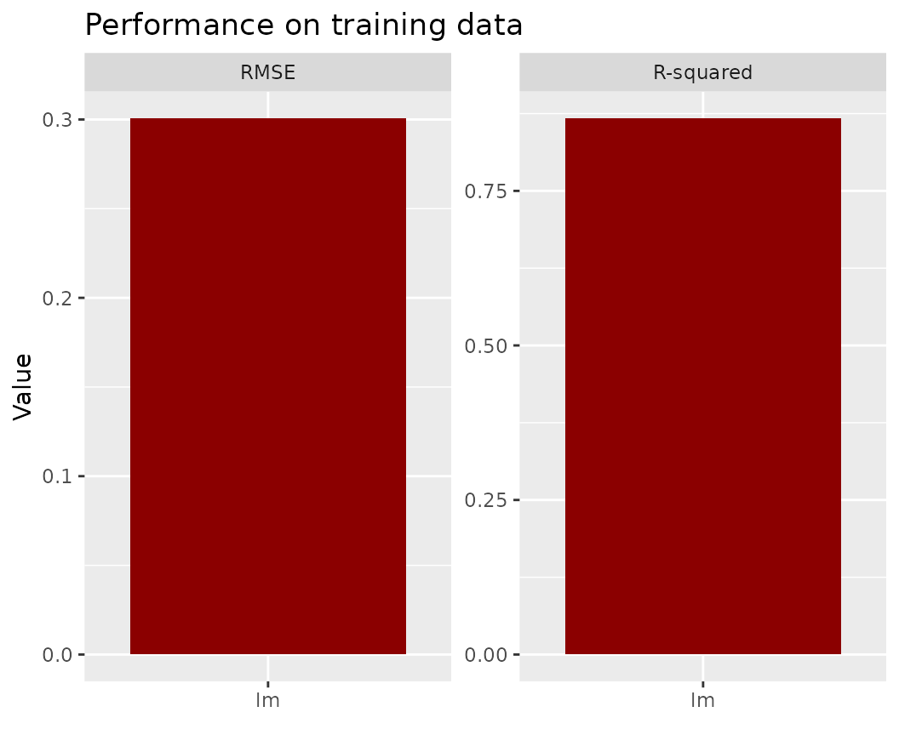
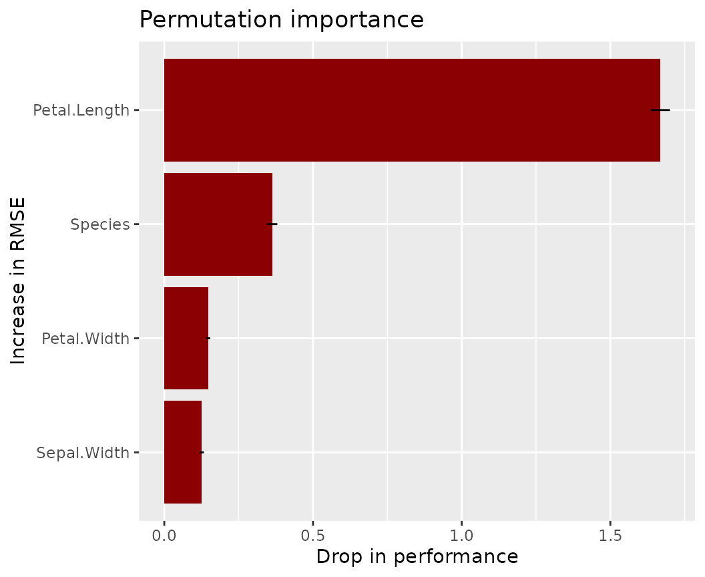
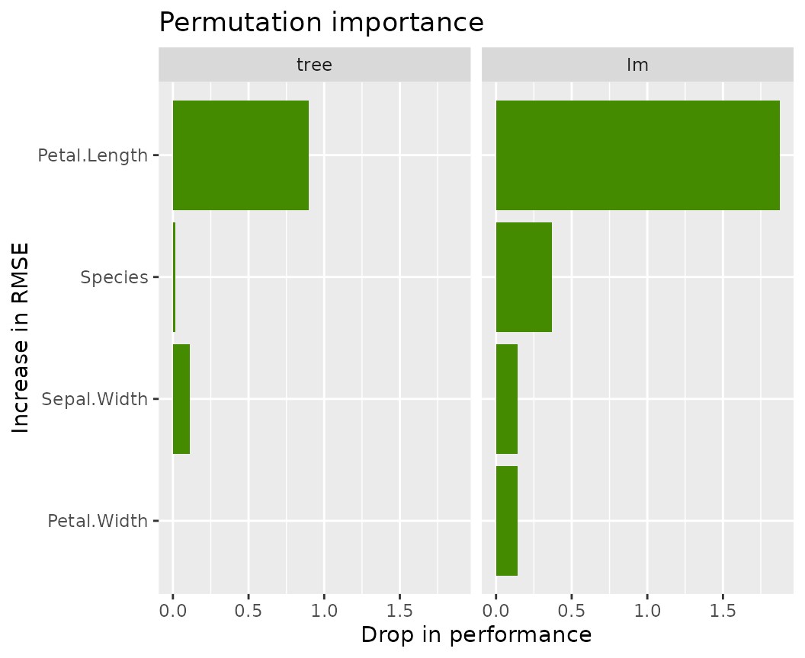

Overview
No black-box model without XAI. This is where packages like
- {DALEX},
- {iml}, and
- {flashlight} enter the stage.
{flashlight} offers the following XAI methods:
-
light_performance(): Performance metrics like RMSE and/or \(R^2\) -
light_importance(): Permutation variable importance (Fisher, Rudin, and Dominici 2018) -
light_ice(): Individual conditional expectation (ICE) profiles (Goldstein et al. 2015) (centered or uncentered) -
light_profile(): Partial dependence (Friedman 2001), accumulated local effects (ALE) (Apley and Zhu 2016), average predicted/observed/residual -
light_profile2d(): Two-dimensional version oflight_profile() -
light_effects(): Combines partial dependence, ALE, response and prediction profiles -
light_interaction(): Different variants of Friedman’s H statistics (Friedman and Popescu 2008) -
light_breakdown(): Variable contribution breakdown (approximate SHAP) for single observations (Gosiewska and Biecek 2019) -
light_global_surrogate(): Global surrogate trees (Molnar 2019)
Good to know:
- Each method acts on an explainer object called
flashlight(see examples and Section “flashlights”). - Multiple models can be compared via
multiflashlight(). - Calling
plot()visualizes the results via {ggplot2}. - Methods support case weights.
- Methods support a grouping variable.
Installation
# From CRAN
install.packages("flashlight")
# Development version
devtools::install_github("mayer79/flashlight")Usage
Let’s start with an iris example. For simplicity, we do not split the data into training and testing/validation sets.
library(ggplot2)
library(MetricsWeighted)
library(flashlight)
fit_lm <- lm(Sepal.Length ~ ., data = iris)
# Make explainer object
fl_lm <- flashlight(
model = fit_lm,
data = iris,
y = "Sepal.Length",
label = "lm",
metrics = list(RMSE = rmse, `R-squared` = r_squared)
)Performance
fl_lm |>
light_performance() |>
plot(fill = "darkred") +
labs(x = element_blank(), title = "Performance on training data")
fl_lm |>
light_performance(by = "Species") |>
plot(fill = "darkred") +
ggtitle("Performance split by Species")Permutation importance regarding first metric
Error bars represent standard errors, i.e., the uncertainty of the estimated importance.
fl_lm |>
light_importance(m_repetitions = 4) |>
plot(fill = "darkred") +
labs(title = "Permutation importance", y = "Increase in RMSE")
ICE curves for Petal.Width
fl_lm |>
light_ice("Sepal.Width", n_max = 200) |>
plot(alpha = 0.3, color = "chartreuse4") +
labs(title = "ICE curves for 'Sepal.Width'", y = "Prediction")
fl_lm |>
light_ice("Sepal.Width", n_max = 200, center = "middle") |>
plot(alpha = 0.3, color = "chartreuse4") +
labs(title = "c-ICE curves for 'Sepal.Width'", y = "Prediction (centered)") ### PDPs
### PDPs
fl_lm |>
light_profile("Sepal.Width", n_bins = 40) |>
plot() +
ggtitle("PDP for 'Sepal.Width'")
fl_lm |>
light_profile("Sepal.Width", n_bins = 40, by = "Species") |>
plot() +
ggtitle("Same grouped by 'Species'")

ALE
fl_lm |>
light_profile("Sepal.Width", type = "ale") |>
plot() +
ggtitle("ALE plot for 'Sepal.Width'")Different profile plots in one
fl_lm |>
light_effects("Sepal.Width") |>
plot(use = "all") +
ggtitle("Different types of profiles for 'Sepal.Width'")Variable contribution breakdown for single observation
fl_lm |>
light_breakdown(new_obs = iris[1, ]) |>
plot()
Global surrogate tree
fl_lm |>
light_global_surrogate() |>
plot() ### Multiple models
### Multiple models
Multiple flashlights can be combined to a multiflashlight.
library(rpart)
fit_tree <- rpart(
Sepal.Length ~ .,
data = iris,
control = list(cp = 0, xval = 0, maxdepth = 5)
)
# Make explainer object
fl_tree <- flashlight(
model = fit_tree,
data = iris,
y = "Sepal.Length",
label = "tree",
metrics = list(RMSE = rmse, `R-squared` = r_squared)
)
# Combine with other explainer
fls <- multiflashlight(list(fl_tree, fl_lm))
fls |>
light_performance() |>
plot(fill = "chartreuse4") +
labs(x = "Model", title = "Performance")
fls |>
light_importance() |>
plot(fill = "chartreuse4") +
labs(y = "Increase in RMSE", title = "Permutation importance")
fls |>
light_profile("Petal.Length", n_bins = 40) |>
plot() +
ggtitle("PDP")
fls |>
light_profile("Petal.Length", n_bins = 40, by = "Species") |>
plot() +
ggtitle("PDP by Species")
flashlights
The “flashlight” explainer expects the following information:
-
model: Fitted model. Currently, this argument must be named. -
data: Reference data used to calculate things, often part of the validation data. -
y: Column name indatacorresponding to the numeric response. -
predict_function: function of the same signature asstats::predict(). It takes amodeland a data.framedata, and provides numeric predictions, see below for more details. -
linkinv: Optional function applied to the output ofpredict_function(). Should actually be called “trafo”. -
w: Optional column name indatacorresponding to case weights. -
by: Optional column name indataused to group the results. Must be discrete. -
metrics: List of metrics, by defaultlist(rmse = MetricsWeighted::rmse). For binary (probabilistic) classification, good candidate metrics would beMetricsWeighted::logLoss. -
label: Mandatory name of the model.
Typical predict_functions (a selection)
The default stats::predict() works for models of
class
It also works for meta-learner models like
- {caret}, and
- {mlr3}.
Manual prediction functions are, e.g., required for
- {ranger}: Use
function(m, X) predict(m, X)$predictionsfor regression, andfunction(m, X) predict(m, X)$predictions[, 2]for probabilistic binary classification -
glm(): Usefunction(m, X) predict(m, X, type = "response")to get GLM predictions at the response scale
A bit more complicated are models whose native predict function do not work on data.frames:
- {xgboost} and {lightgbm}: They digest numeric matrices only, so the prediction function also needs to deal with the mapping from data.frame to matrix.
- {keras}: It might accept data.frame inputs, but we need to take care of scalings.
Example (XGBoost):
This works when non-numeric features are all factors (not categoricals):
x <- vector of features
predict_function = function(m, df) predict(m, data.matrix(df[x]))